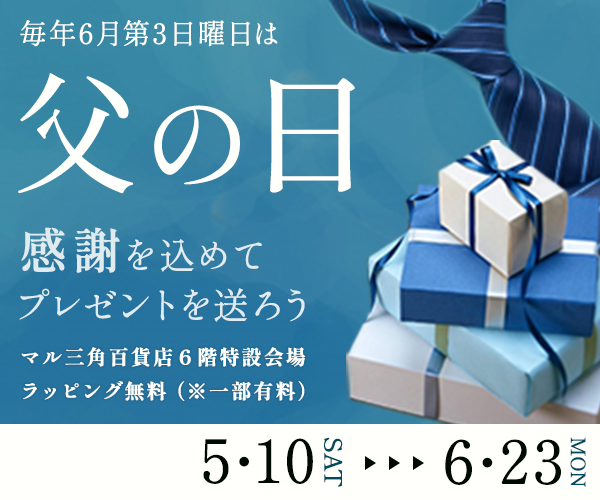
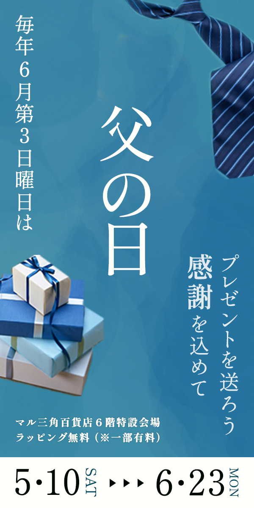

架空の父の日バナー
- 学校課題
- #バナー

| 概要 | 父の日のバナー広告を3サイズ（300×250、320×100、300×600）で制作しました。 |
|---|---|
| 目的 | 父の日キャンペーンの認知拡大。 |
| ターゲット | 両親に感謝を伝えたい30〜50代の男女。 |
| デザイン | 全体のトーンにはネイビーを基調とした落ち着いた色味を使用し、父親らしい信頼感や安心感を表現しました。 フォントにはゴシック体を採用し、可読性と親しみやすさを持たせ、適度な高級感を演出しています。 ネクタイをはじめとする「父の日」を象徴するモチーフを随所に取り入れ、 ひと目で印象に残るような構成に仕上げました。 |
| 制作期間 | 2日 |
| 使用したツール | Photoshop |
